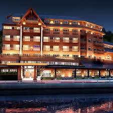

Location
Venue: Dreams Hotel, Puerto Varas, Chile

MQT 2026 will be held at Dreams Hotel in the beautiful city of Puerto Varas, located at the southern end of Lake Llanquihue. The venue is only a short taxi trip from El Tepual International Airport (PMC) in Puerto Montt.
Puerto Varas is a busy tourist destination in December. Participants are advised to make reservations with sufficient anticipation in any of the many lodges, cabins, hotels and hostals in the area.
Dreams Hotel Address
Del Salvador 21, 5550206 Puerto Varas, Los Lagos, Chile
View hotel website →
Flight information
Direct flights from Santiago (SCL) → Puerto Montt (PMC) are available several times a day via JetSmart, Sky Airlines, and LATAM Airlines. Taxi and van rides to Puerto Varas (~25 min trip) can be booked directly at El Tepual Airport or request at the hotel venue.